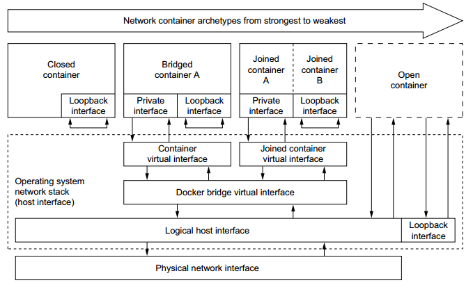
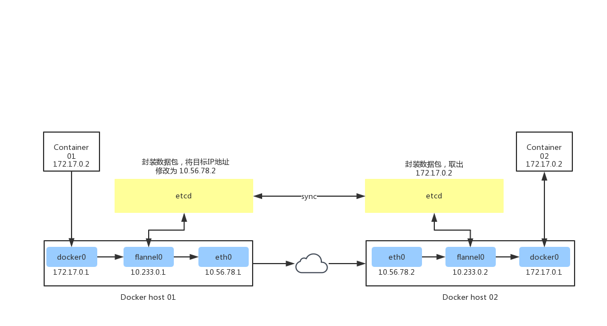

网络模型¶
当你开始大规模使用 Docker 时，你会发现需要了解很多关于网络的知识。Docker 容器需要运行在一台宿主机上，可以是一台物理机（on-premise 数据中心的裸金属服务器），也可以是 on-prem 或云上的一台虚拟机。
简单的 Docker 架构¶
宿主机和容器的关系是 1:N ，这意味着一台宿主机上可以运行多个容器。例如，从 Facebook 的报告来看，取决于机器的能力，每台宿主机上平均可以运行 10 到 40 个容器。另一个数据是：在 Mesosphere，我们发现，在裸金属服务器上的各种负载测试中，每台宿主机上不超过 250 个容器是可能的。
无论你是在单主机上进行部署，还是在集群上部署，你总得和网络打交道：
对于大多数单主机部署来说，问题归结于是使用共享卷进行数据交换，还是使用网络（基于 HTTP 或者其他的）进行数据交换。尽管 Docker 数据卷很容易使用，但也引入了紧耦合，这意味着很难将单主机部署转换为多主机部署。自然地，共享卷的优势是速度。
在多主机部署中，你需要考虑两个方面：单主机上的容器之间如何通信和多主机之间的通信路径是怎样的。性能考量和安全方面都有可能影响你的设计决定。多主机部署通常是很有必要的，原因是单主机的能力有限，也可能是因为需要部署分布式系统，例如 Apache Spark、HDFS 和 Cassandra。
Note
分布式系统的数据本地化（Distributed Systems and Data Locality）
使用分布式系统（计算或存储）的基本想法是想从并行处理中获利，通常伴随着数据本地化。数据本地化，我指的是将代码转移到数据所在地的原则，而不是传统的、其他的方式。考虑以下的场景：如果你的数据集是 TB 级的，而代码是 MB 级的，那么在集群中移动代码此传输 TB 级数据更高效。除了可以并行处理数据之外，分布式系统还可以提供容错性，因为系统中的一部分可以相对独立地工作。
简单的说，Docker 网络是原生的容器 SDN 解决方案。总而言之，Docker 网络有四种模式：桥接模式，主机模式，容器模式和无网络模式。我们会详细地讨论主机上的各种网络模式。
$ docker network ls
NETWORK ID NAME DRIVER SCOPE
94bb253e0ddc bridge bridge local
59d9038bfac5 host host local
920274f49a70 none null local
bridge 模式网络¶
在该模式中，docker 守护进程创建了一个虚拟以太网桥 docker0 ，附加在其上的任何网卡之间都能自动转发数据包。默认情况下，守护进程会创建一对对等接口，将其中一个接口设置为容器的 eth0 接口，另一个接口放置在宿主机的命名空间中，从而将宿主机上的所有容器都链接到这个内部网络上。同时，守护进程还会从网桥的似有地址空间中分配一个IP地址和子网给该容器。
$ docker container run --name=web01 --detach --publish-all --net=bridge nginx:1.14-alpine
$ docker container ps
CONTAINER ID IMAGE COMMAND CREATED STATUS PORTS NAMES
7f056ef642b7 nginx:1.14-alpine "nginx -g 'daemon ..." 6 seconds ago Up 4 seconds 0.0.0.0:32768->80/tcp web01
$ docker container inspect web01
...
"NetworkSettings": {
"Bridge": "",
"SandboxID": "56cb1f03f8eda8c1ce73a764eb36794cd87dbf3cae399d2220b623b1f711678a",
"HairpinMode": false,
"LinkLocalIPv6Address": "",
"LinkLocalIPv6PrefixLen": 0,
"Ports": {
"80/tcp": [
{
"HostIp": "0.0.0.0",
"HostPort": "32768"
}
]
},
"SandboxKey": "/var/run/docker/netns/56cb1f03f8ed",
"SecondaryIPAddresses": null,
"SecondaryIPv6Addresses": null,
"EndpointID": "11ede3c1709ded6a68dd5c4a4607feb5eec780534a8882580b9bc30c79c14b7a",
"Gateway": "172.17.0.1",
"GlobalIPv6Address": "",
"GlobalIPv6PrefixLen": 0,
"IPAddress": "172.17.0.2",
"IPPrefixLen": 16,
"IPv6Gateway": "",
"MacAddress": "02:42:ac:11:00:02",
"Networks": {
"bridge": {
"IPAMConfig": null,
"Links": null,
"Aliases": null,
"NetworkID": "94bb253e0ddcd0f2f7b0037bc51c537d2bdcd5d5a156963fbf1c611c37ae807d",
"EndpointID": "11ede3c1709ded6a68dd5c4a4607feb5eec780534a8882580b9bc30c79c14b7a",
"Gateway": "172.17.0.1",
"IPAddress": "172.17.0.2",
"IPPrefixLen": 16,
"IPv6Gateway": "",
"GlobalIPv6Address": "",
"GlobalIPv6PrefixLen": 0,
"MacAddress": "02:42:ac:11:00:02",
"DriverOpts": null
}
}
}
...
查看 bridge 网桥与容器的接口
$ yum -y install bridge-utils
$ brctl show
bridge name bridge id STP enabled interfaces
docker0 8000.02428b0967f8 no veth20f8faa
因为 bridge 模式是 Docker 的默认设置，所以你也可以使用 docker container run --detach --publish-all --name=web01 nginx:1.14-alpine 。如果你没有使用 –publish-all（发布该容器暴露的所有端口）或者 –publish host_port:container_port（发布某个特定的端口），IP 数据包就不能从宿主机之外路由到容器中。

host 模式¶
该模式将禁用 Docker 容器的网络隔离。因为容器共享了宿主机的网络命名空间，直接暴露再公共网络之中。因此，你需要通过端口映射（port mapping）来进行协调。
$ docker container run --detach --name=web01 --publish-all --net=host nginx:1.14-alpine
882db350e02b9922bd911ce9d1b08cfc085cc7baf1dee2a75fbfeae1fae12cfd
$ ip addr | grep -A 2 eth0:
2: eth0: <BROADCAST,MULTICAST,UP,LOWER_UP> mtu 1500 qdisc pfifo_fast state UP group default qlen 1000
link/ether d0:0d:b5:97:40:9f brd ff:ff:ff:ff:ff:ff
inet 172.19.135.14/24 brd 172.19.135.255 scope global dynamic eth0
$ docker container ps
CONTAINER ID IMAGE COMMAND CREATED STATUS PORTS NAMES
c5a4c0105f22 nginx:1.14-alpine "nginx -g 'daemon ..." About a minute ago Up About a minute web01
我们进入容器内部查看网卡信息
# docker container exec --interactive --tty web01 /bin/sh
/ # ip a
1: lo: <LOOPBACK,UP,LOWER_UP> mtu 65536 qdisc noqueue state UNKNOWN qlen 1
link/loopback 00:00:00:00:00:00 brd 00:00:00:00:00:00
inet 127.0.0.1/8 scope host lo
valid_lft forever preferred_lft forever
inet6 ::1/128 scope host
valid_lft forever preferred_lft forever
2: eth0: <BROADCAST,MULTICAST,UP,LOWER_UP> mtu 1500 qdisc pfifo_fast state UP qlen 1000
link/ether d0:0d:b5:97:40:9f brd ff:ff:ff:ff:ff:ff
inet 172.19.135.14/24 brd 172.19.135.255 scope global dynamic eth0
valid_lft 314753218sec preferred_lft 314753218sec
inet6 fe80::d20d:b5ff:fe97:409f/64 scope link
valid_lft forever preferred_lft forever
3: docker0: <NO-CARRIER,BROADCAST,MULTICAST,UP> mtu 1500 qdisc noqueue state DOWN
link/ether 02:42:8b:09:67:f8 brd ff:ff:ff:ff:ff:ff
inet 172.17.0.1/16 scope global docker0
valid_lft forever preferred_lft forever
inet6 fe80::42:8bff:fe09:67f8/64 scope link
valid_lft forever preferred_lft forever
/ # exit
我们可以从上例中看到：容器和宿主机具有相同的IP地址 172.19.135.14
在下图中我们可以看到：当使用 host 模式网络时，容器实际上继承了宿主机的IP地址。该模式比 bridge 模块更快（因为没有路由开销），但是它将容器直接暴露在公共网络中，是有安全隐患的。
container 模式网络¶
该模式会重用另一个容器的网络名称空间。通常来说，当你想要自定网络栈时，该模式时很有用的。实际上，该模式也是 Kubernetes 使用的网络模式。
# docker container run --detach --publish-all --net=bridge --name=web01 nginx:1.14-alpine
07d43ffe5f341cb10a46c3be9c71a05ffa5b5004aedb38a6cc975705855b8dd9
# docker ps
CONTAINER ID IMAGE COMMAND CREATED STATUS PORTS NAMES
07d43ffe5f34 nginx:1.14-alpine "nginx -g 'daemon ..." 7 seconds ago Up 6 seconds 0.0.0.0:32769->80/tcp web01
# docker exec --tty --interactive web01 ip addr
1: lo: <LOOPBACK,UP,LOWER_UP> mtu 65536 qdisc noqueue state UNKNOWN qlen 1
link/loopback 00:00:00:00:00:00 brd 00:00:00:00:00:00
inet 127.0.0.1/8 scope host lo
valid_lft forever preferred_lft forever
6: eth0@if7: <BROADCAST,MULTICAST,UP,LOWER_UP,M-DOWN> mtu 1500 qdisc noqueue state UP
link/ether 02:42:ac:11:00:02 brd ff:ff:ff:ff:ff:ff
inet 172.17.0.2/16 scope global eth0
valid_lft forever preferred_lft forever
# docker run --interactive --tty --net=container:web01 ubuntu:14.04 ip addr
1: lo: <LOOPBACK,UP,LOWER_UP> mtu 65536 qdisc noqueue state UNKNOWN group default qlen 1
link/loopback 00:00:00:00:00:00 brd 00:00:00:00:00:00
inet 127.0.0.1/8 scope host lo
valid_lft forever preferred_lft forever
6: eth0@if7: <BROADCAST,MULTICAST,UP,LOWER_UP> mtu 1500 qdisc noqueue state UP group default
link/ether 02:42:ac:11:00:02 brd ff:ff:ff:ff:ff:ff
inet 172.17.0.2/16 scope global eth0
valid_lft forever preferred_lft forever
结果显示：第二个容器使用 --net=container 参数，因此和第一个容器 web01 具有相同的ip地址 172.17.0.2
none 模式网络¶
该模式将容器放置在它自己的网络中，但是并不进行任何配置。实际上，该模式关闭了容器的网络功能，在以上两种情况下时有用的：容器并不需要网络（例如只需要写磁盘卷的批处理任务）；你希望自定义网络。
# docker container run --detach --publish-all --net=none nginx:1.14-alpine
90e19ccb6938b12c366022411a93f25ecb05a7f6b49dd640bb5a0703068076ab
# docker ps
CONTAINER ID IMAGE COMMAND CREATED STATUS PORTS NAMES
90e19ccb6938 nginx:1.14-alpine "nginx -g 'daemon ..." 12 seconds ago Up 10 seconds gracious_bartik
# docker container inspect gracious_bartik | grep IPAddress
"SecondaryIPAddresses": null,
"IPAddress": "",
"IPAddress": "",
在上面的例子中可以看到，恰如我们所料，网络没有任何配置。
其他网络话题¶
分配IP地址
频繁大量的创建和销毁容器时，手动分配IP地址是不能接受的。bridge 模式可以在一定程度上解决这个问题。为了防止本地网络上的 ARP 冲突，Docker Daemon 会根据分配的IP地址生成一个随机的 MAC 地址。
分配端口
你会发现有两大阵营：固定端口分配（fixed-port-allocation）和动态端口分配（dynamically-port-allocation）。每个服务或者应用可以有各自的分配方法，也可以是作为全局的策略，但是你必须做出自己的判断和决定。请记住，bridge 模式中，Docker 会自动分配 UDP 或 TCP 端口，并使其可路由。
网络安全
Docker 可以开启容器间通信（意味着默认配置
--icc=true），也就是说，宿主机上的所有容器可以不接受任何限制地相互通讯，这可能导致拒绝服务攻击。进一步地，Docker 可以通过--ip_forward和--iptables两个选项控制容器间、容器和外部世界的通信。你应该了解这些选项的默认值，并让网络组根据公司策略设置 Docker 进程。另一个网络安全方面是线上加密（on-the-wire encryption），通常是指 RFC 5246 中定义的 TLS/SSL。
跨主机网络¶
在微服务架构中，多个服务是通过服务注册中心进行管理的，服务需要将自己的IP地址和端口发送给注册中心，这样该服务才能被其他服务感知并调用。但是当服务在 docker 容器内运行时，服务获取到的自身IP是宿主机分配的内部IP（默认情况下会在 172.17.0.0/16 子网下），如 172.17.0.1 这个地址只能在宿主机内部使用（通过 docker0 网桥转发），其他的主机是无法 ping 通地。我们就以服务注册的场景讨论 docker 容器跨主机通信方案。
端口映射
启动容器时通过 -p 参数将容器内服务监听的端口映射到主机端口中。例如容器运行的 web 服务监听 8080 端口，那么当指定 -p 8080:80 时，外部就可以通过访问宿主机的 80 端口访问到这个 web 服务了。
这种方式有一个很大的缺点：服务器端口是一种稀缺资源，一台主机往往会运行多个容器，它们之间很可能会出现端口冲突的情况，而且就服务注册这个场景而言，容器内的 web 服务是无法主动得到宿主机的ip地址的，因此需要我们在启动容器时通过 Dockerfile 将宿主机IP通过环境变量注入到容器中，然后配置 web 项目使用我们指定的 IP 来注册自身。这种方式显然无法应用于大规模集群部署。
不进行网络隔离，直接使用宿主机网络配置
通过 –net=host 参数可以指定使用该模式。在这种模式下，容器的网络环境并没有通过 Linux 内核的 Network Namespace 进行隔离，在容器内可以自由修改宿主机的网络参数，因此是不安全的，但优点是网络性能损失可以忽略不计。对于我们的场景来说，微服务能够想直接部署一样征程获取到主机IP。
组件 overlay 网络
Overlay 网络其实就是隧道技术，即将一种网络协议包装在另一种协议中传输的技术。Docker 常见的 overlay 网络实现有 flannel，swarm overlay，Open vSwitch 等。它们的工作流程基本都是一样的：通过某种方式保证所有 docker 容器都有全局唯一的 IP，然后把 docker 容器的ip和其他所在宿主机ip的对应关系存放到第三方存储服务中（如 etcd，consul），之后通过在宿主机上修改路由表、创建虚拟网卡的方式，将数据包转发到目标容器所在的宿主机上，最后再由目标宿主机的 docekr0 网桥转发给容器。对 flannel 来说，它的工作原理如下：
10.56.78.1 和 10.56.78.2 是局域网内的两台物理机，它们各运行着container01和container02。当container01要访问container02时：
数据包首先到达 docker0，由于 flannel 修改了路由表，docker0 会将其转发给 flannel0
flannel 的守护进程 flanneld 会持续监听flannel 转出的数据包，它首先会到 etcd 中查询 container01 所在的宿主机的 IP(10.56.78.1)，然后将原数据包进行封装（可以使用 UDP 或 vxlan 封装），把目的的IP地址改为对方宿主机IP并交由 eth0
etcd 将新数据包通过网络发到 10.56.78.2
10.56.78.2 的 eth0 收到数据包后转发给 flannel0，由守护进程 flanneld 进行解包，取出原数据包，得到容器IP地址 172.17.0.2，然后转发给 docker0
docker0 将数据包转发至容器进程对应端口
至此 container01 就实现了跨主机访问 container02。
oberlay 网络的性能损耗取决于其实现方式，经测试，flannel(vxlan模式)，swarm overlay 实现的损耗几乎与端口映射持平，但是 docker 1.12 版本新加入的 swarm overlay 实现性能损耗高达 60%（swarm overlay 代码实现质量不高）。因此，在生产环境中不建议使用 swarm overlay 方案。
Calico 和 Weave
这两种实现的方式跟 overlay 不太一样，它会把每台宿主机都当成一个路由器使用，数据包在各个主机之间流动最终被投递到目标主机。为了让主机支持路由功能，它们会向路由表中写入大量记录，因此如果集群中的节点太多，路由表记录数过高（超过1万）时性能会出现问题。
虽然实现原理一样，但它们的性能区别还是很大的，Calico 因为使用的是内核特性，能做到在内核态完成路由，因此性能于原生网络非常接近（90%以上），而 Weave 则是在用户态转发数据包，性能比较差，损耗高达 70% 以上。
总结
overlay 方案和 Calico，Weave 由于可以实现容器IP的直接通信，因此在服务注册的场景下都可以正常运行，到那时需要付出一定的性能代价。而端口映射方式则需要强行配置我们的应用使用指定IP，灵活性极差，只适用于小规模的集群部署。而 host 模式则是通过牺牲隔离性来换取最大化网络性能。在实际应用中我们应该根据业务特点来选择最适合的网络方案。